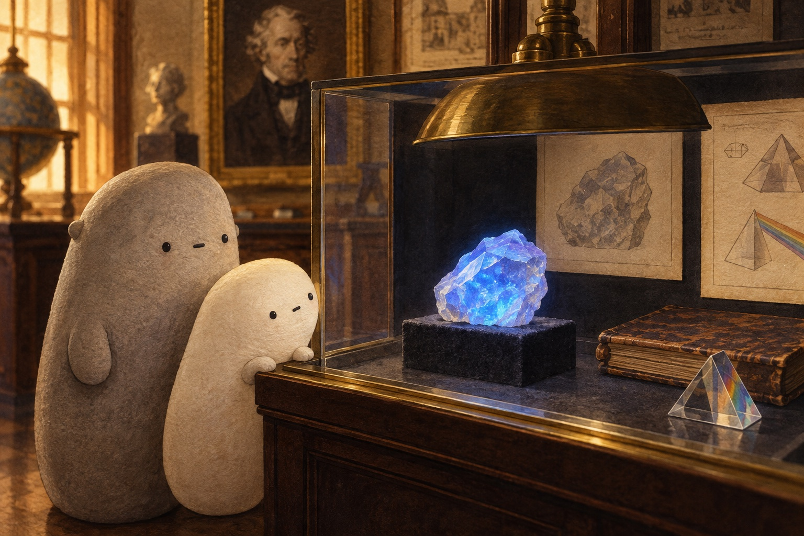

The light we cannot see
The light we cannot see. · Curiosity day

A green star shines in a quiet museum case. Beside it, a cream star stays dull. Both sit under the same dark-looking lamp. “Is one full of tiny lights?” Little asks. Big leans closer. The two stars have left them a puzzle.

Their search begins long ago. In 1801, Johann Ritter spread sunlight into a rainbow. Light-sensitive material darkened just beyond violet, where he could see no light. An unseen kind of light was there! Today we call it ultraviolet, or UV. “A clue past the rainbow,” Little says.

Another display tells of George Stokes. In 1852, he studied materials that took in light and gave out a different color. He called the glow fluorescence. A crystal gleams blue in the case. “Could our star be doing that?” Little wonders. The old discoveries offer a new clue.

Back at the stars, Little studies the black light. It gives out mostly UV-A, the ultraviolet near visible violet. Our eyes cannot see UV-A. A little visible violet makes the lamp look purple. “It isn't sending out darkness,” Little says. “It's sending light we cannot see!”

The green star has a special coating: a fluorescent phosphor. It absorbs UV-A and quickly emits green light. Absorb means take in; emit means give out. That re-glow is fluorescence. The plain star lacks this coating. “Same shape, different material!” Little says. The glow comes from the star itself.

The museum lamp switches off. The green fluorescence stops almost at once. Little sketches a lamp, a star, and light coming out. “No tiny lights inside,” Little says. “A material makes the re-glow.” Big leaves room on the page. What other material might hold a clue?
Think about it: What clue helped Ritter find unseen light? Why did Little change the idea about tiny lights inside the star? Use the coating as a clue.